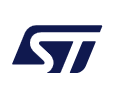

GEOからLEOへ：
市場のパラダイムシフト
かつての宇宙用半導体は、静止軌道（GEO）における20年以上の寿命を保証するため、過剰なまでのシールドと、一点ものの製造プロセスに依存していました。
新たな課題
- コンステレーションの経済性: 数千基の衛星を打ち上げる際、1個数十万円のセラミック部品は採算を破壊します。
- ミッション寿命の短縮: LEO衛星の寿命は5〜7年。過剰な信頼性よりも、適切なコストでの「量産性」が優先されます。

低軌道コンステレーションが求める「信頼性」と「量産性」の不可避な交差点。
STMicroelectronicsのFD-SOI技術が、宇宙ビジネスの物理的限界を再定義します。
かつての宇宙用半導体は、静止軌道（GEO）における20年以上の寿命を保証するため、過剰なまでのシールドと、一点ものの製造プロセスに依存していました。
STMの宇宙用デバイスは、フランス・レンヌ等の自社Fabにて、ウェハ検査からパッケージングまで一貫して管理されます。修理不能な宇宙空間において、故障の芽を事前に摘み取る「スクリーニング」こそが信頼性の源泉です。
コスト優先の樹脂パッケージは、取り扱いに細心の注意が必要です。
現在、半導体市場では「New Space（宇宙の民間転換）」と「パワーエレクトロニクスの高効率化」という二つの巨大な潮流が交差しています。その先行指標となっているのが、STマイクロエレクトロニクスの動向です。
STMの核となるFD-SOI（完全空乏型シリコン・オン・インシュレータ）プロセスは、従来のバルクCMOSに比べ放射線耐性に優れ、かつ圧倒的な低消費電力を実現。衛星の計算ユニットから次世代の産業機器まで、新たなデファクトスタンダードとなりつつあります。
今後、開発現場に求められるのは、環境変化に左右されない「設計の移植性」と「強固な供給網」です。
| 技術要素 | 宇宙（New Space）への利点 | 地上（産業・車載）への波及 |
|---|---|---|
| FD-SOI | 自然な耐放射線性 (Soft Error抑制) | 超低消費電力・高効率処理 |
| SiC / GaN | 電源システムの小型・軽量化 | EV航続距離延長・産業機器省エネ |
STMicroelectronicsのFD-SOI技術は、ウェハ上に形成された極薄の絶縁膜（BOX層）が、宇宙線による電荷の蓄積を遮断します。
宇宙プロジェクトのリードタイムは長く、FM品（フライト用）で24週間以上を要します。スムーズな供給には、早期のミッションプロファイル共有が不可欠です。
| 項目 | 確認のポイント |
|---|---|
| 軌道・ミッション期間 | GEO / LEO / 月探査。稼働期間（5年、15年など） |
| 放射線耐性要求 | TID要求値（krad）、SEE（SELフリー要求の有無） |
| パッケージ・グレード | セラミック（Flight級） / 樹脂（New Space級） |
| 商流・スケジュール | 試作（EM品）時期、量産（FM品）時期、最終ユーザー（EUS） |